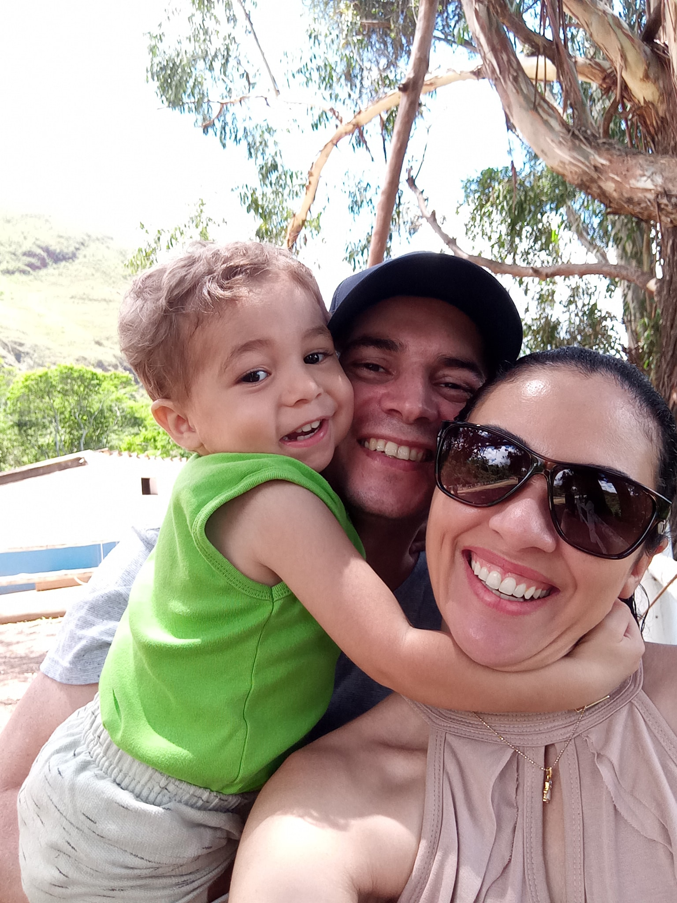

Daniel Barbosa
A família é o que me motiva e me impulsiona a seguir em frente. Em 2023, concluí o ensino médio com o objetivo de crescer profissionalmente e proporcionar mais estabilidade à minha família. Após anos trabalhando na área de segurança privada, decidi ingressar em um curso superior. Após pesquisar os relatos de ex-alunos, tive certeza de que a Uninter era a melhor opção para cursar ADS.